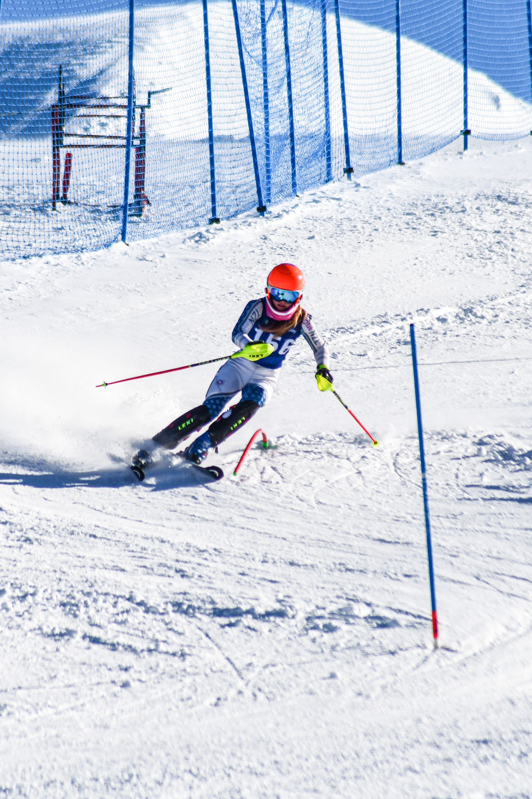
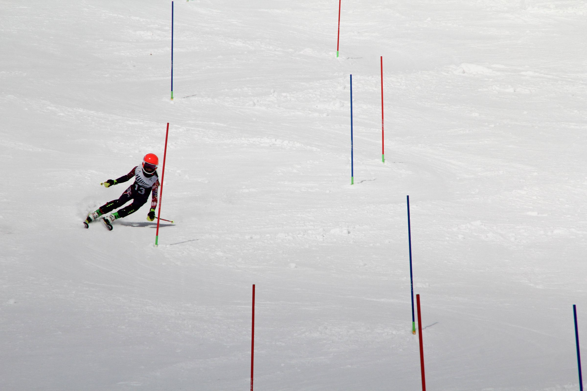
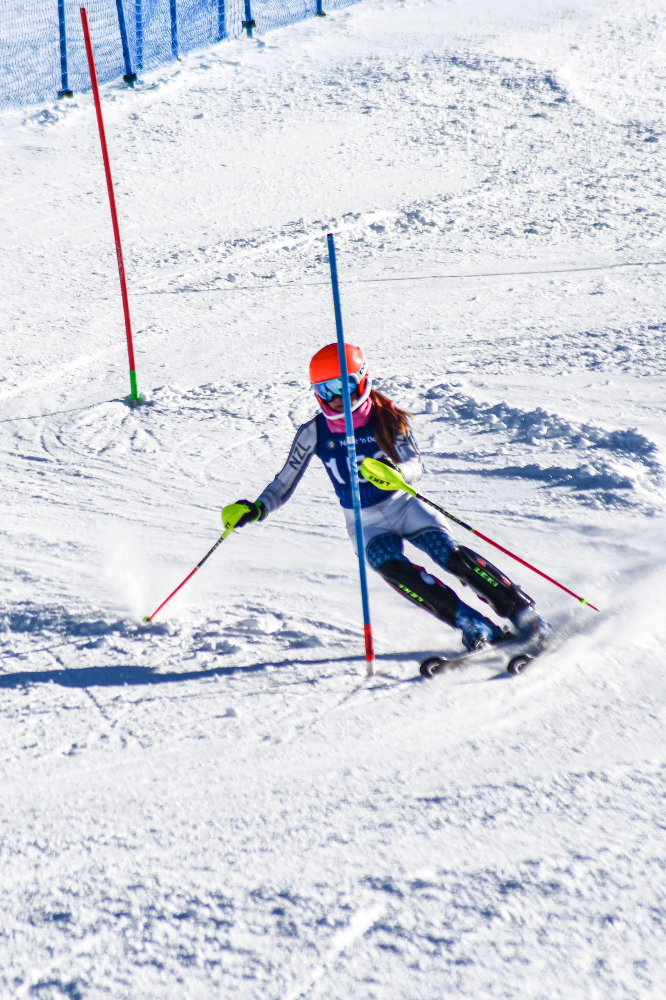
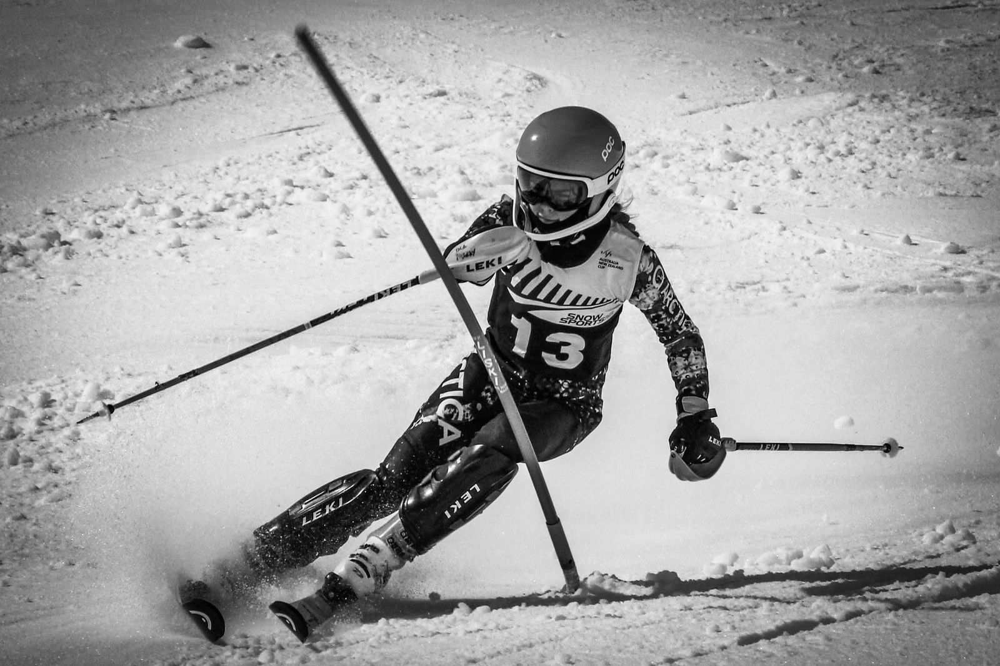
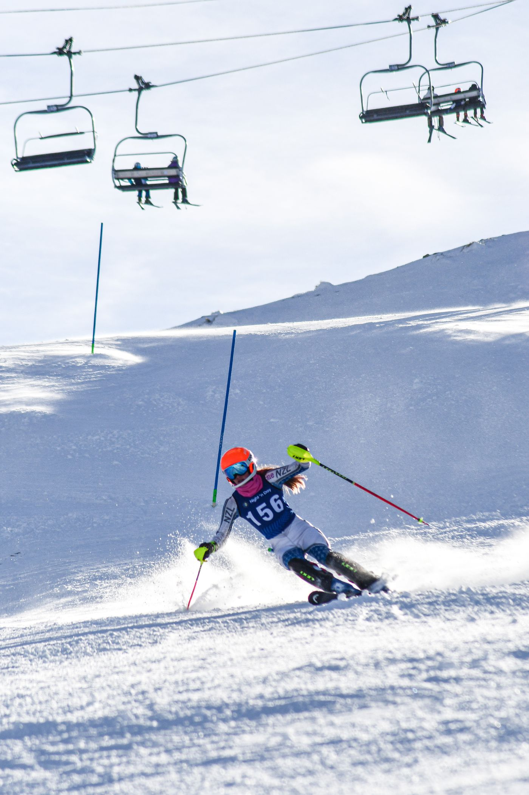
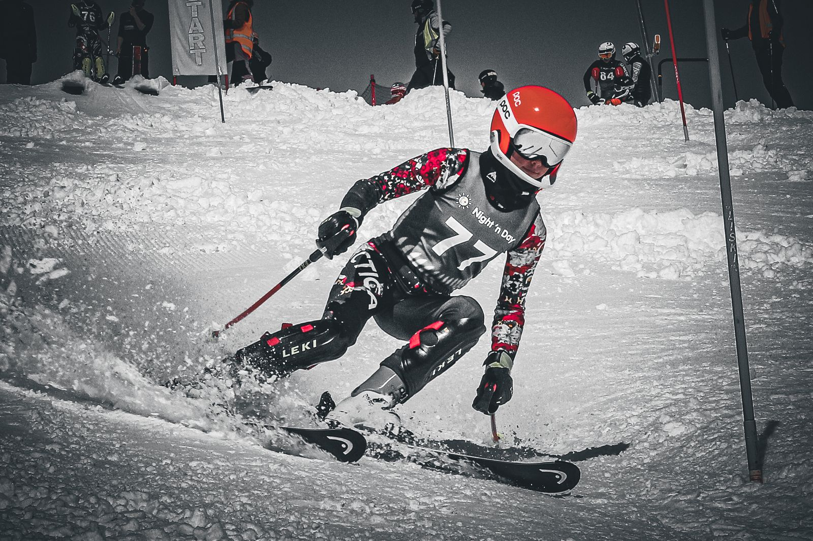
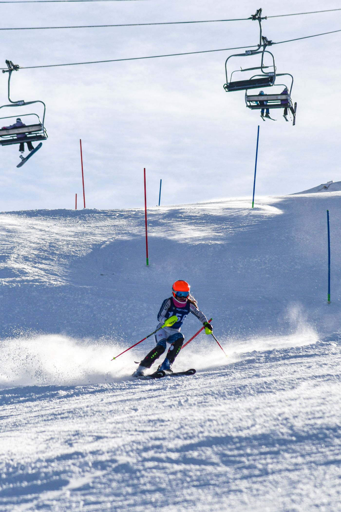
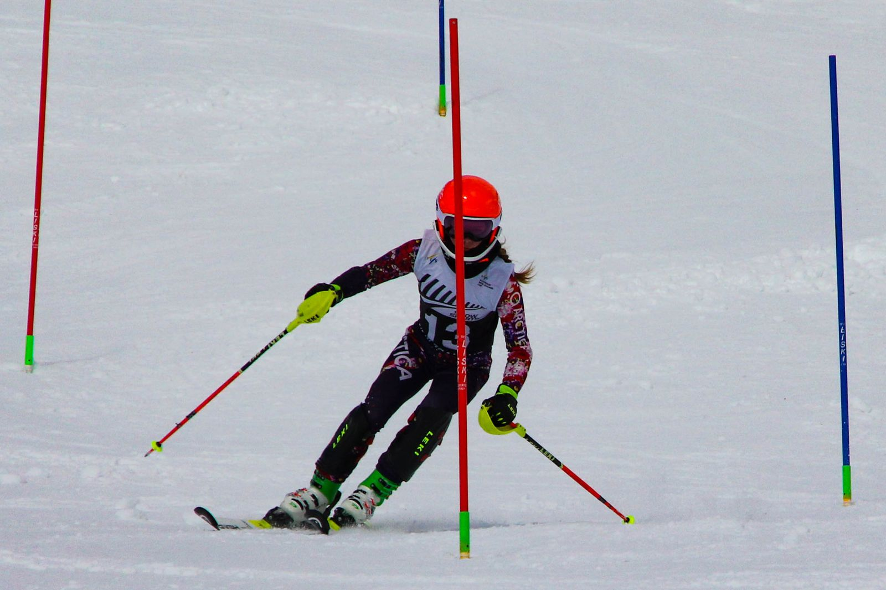
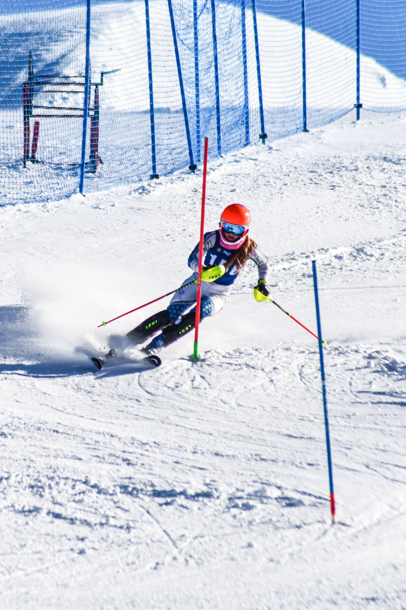

Alpine ski racer · slalom & giant slalom · Queenstown, New Zealand
The short version
Isla races slalom and giant slalom with the Queenstown Alpine Ski Team, and has been selected for the New Zealand Youth Alpine Team. National Youth Champs, National Points races, northern winters in the Swiss Alps: the long game is under way.

The office

The gallery
01 / 07






Drag or scroll sideways
“First lift up. Last run down.”
The record
Selected for the New Zealand Youth Alpine Team, the national pathway squad for the next generation of racers.
A clean sweep at Coronet Peak: won every run of the dual slalom.
Bronze in both slalom runs at Coronet Peak.
Top-five finishes at the national title races in both 2024 and 2025, racing U14.
| 29 Aug | National Points Slalom ×2 · Mt Hutt | 11th11th |
| 24 Aug | NZ Youth Champs Giant Slalom · Coronet Peak | 16thDNF |
| 20 Sep | National Points Slalom · Cardrona | 4th5th |
| 19 Sep | South Island Champs Giant Slalom · Cardrona | 6th5th6th |
| 31 Aug | National Points Slalom · Mt Hutt | 4th |
| 30 Aug | National Youth Champs Giant Slalom · Mt Hutt | 9th |
| 29 Aug | National Youth Champs Slalom · Mt Hutt | 5th10th |
| 17 Aug | Junior Interfield Giant Slalom · Treble Cone | 6th9th |
| 26 Jul | National Points Slalom · Remarkables | 6th6th |
| 13 Jul | Junior Interfield Dual Slalom · Remarkables | 10th10th |
| 28 Sep | Junior Interfield Slalom · Mt Hutt | 7th |
| 21 Sep | National Youth Champs Giant Slalom · Cardrona | 5th |
| 20 Sep | National Youth Champs Giant Slalom · Cardrona | 6th |
| 19 Sep | National Points Slalom · Cardrona | 9th |
| 14 Sep | Junior Interfield Slalom · Remarkables | 7th |
| 9 Sep | National Points Slalom · Remarkables | 11th12th |
| 24 Aug | Junior Interfield Giant Slalom · Treble Cone | 5th5th |
| 28 Jul | Junior Interfield Slalom · Cardrona | 10th10th |
| 21 Jul | NZ Junior Champs Slalom · Coronet Peak | 3rd3rd |
| 20 Jul | NZ Junior Champs Giant Slalom · Coronet Peak | 7th7th |
| 27 Jan | Grand Prix Migros Slalom, big course · Nendaz | DNF |
| 26 Jan | Welsh Champs Slalom · Champéry | 4th4th |
| 24 Jan | Welsh Champs Giant Slalom · Champéry | 8th |
| 20 Jan | Coupe Raiffeisen Giant Slalom · Les Diablerets | 25th |
| 14 Jan | Coupe Raiffeisen Slalom · Rougemont | DNF |
| 9 Sep | South Island Champs Giant Slalom · Mt Hutt | 9th10th |
| 7 Sep | Battle of the Basin Dual Slalom · Coronet Peak | 1st1st1st |
| 26 Aug | Junior Interfield Slalom · Treble Cone | 10th20th |
| 30 Jul | Junior Interfield Slalom stubbies · Cardrona | 13th13th |
| 22 Jul | NZ Junior Champs Dual Slalom · Remarkables | 9th10th |
| 21 Jul | NZ Junior Champs Giant Slalom · Remarkables | 14th |
| 1 Oct | Junior Interfield Giant Slalom · Cardrona | 10th10th |
| 17 Sep | Junior Interfield Slalom · Remarkables | 15th18th |
| 8 Sep | Battle of the Basin Dual Slalom · Coronet Peak | 3rd |
| 21 Aug | Junior Interfield Giant Slalom · Treble Cone | 13th |
| 24 Jul | NZ Junior Champs Dual Slalom · Coronet Peak | 10th11th |
| 23 Jul | Junior Interfield Dual Slalom · Coronet Peak | 17th14th |